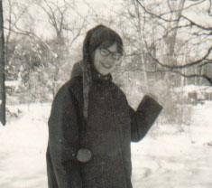
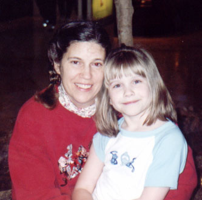

| Amy Christine Marshall, the firstborn daughter of Frank and Ruth Marshall, was born 9 March 1953 in Annapolis, MD. She married Ned Cosby and together they had two children, Matthew and Katie. Amy was an elementary school teacher and Ned was in the Coast Guard and the Ministry, so they moved around a lot. Eventually they made their way back to Severna Park however, and made a home there. Unfortunately, Amy and Ned divorced in the early nineties. Amy, no longer wanting to be a Cosby and not wanting to go back to being a Marshall, hit upon a name she felt more descriptive: Swan - because she was an ugly duckling that blossomed into a beautiful swan. |

|
|

|
Then love found Amy again in the person of Randy Harrill, father to one of her students. Amy and Randy were married and his daughter Lauren joined the family as well. Matthew moved out, but Katie's friend Natalie, who came from a broken home, joined the household. Eventually Natalie became a second daughter to Amy. However, after all the kids had gone off to college, Randy's substance abuse problems came back to haunt him. Amy left him in 2003. She also left Severna Park, crossing the Chesapeake to make a new home on the eastern shore. |
| It was on Maryland's eastern shore that Amy found a kindred spirit in fellow divorcee Kirk Hadsell. Kirk was there while Amy planned the wedding of her daughter in California in 2004 and in early 2005 when Amy finally lost her mother to cancer. Later that summer they decided to tie the knot again and were wed in a small ceremony in Cambridge, MD. |